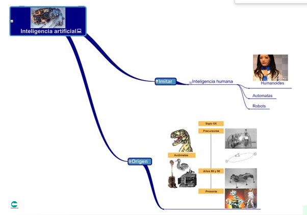

|

IMITAR
La inteligencia artificial (IA) busca imitar o replicar algunas capacidades cognitivas humanas para realizar tareas de manera eficiente y precisa:
1. Aprendizaje y Adaptación: Al igual que los humanos, la IA puede aprender de la experiencia y adaptarse a nuevas situaciones mediante algoritmos de aprendizaje automático y redes neuronales artificiales.
2. Percepción Sensorial: La visión por computadora y el procesamiento de audio permiten a la IA percibir y entender el mundo a través de imágenes, sonidos y otros datos sensoriales, de manera similar a la percepción humana.
3. Procesamiento del Lenguaje Natural: Los sistemas de IA pueden comprender y generar lenguaje humano de manera efectiva, lo que les permite comunicarse con los humanos de una manera más natural, como ocurre con los chatbots y los asistentes virtuales.
4. Razonamiento y Toma de Decisiones: La IA puede realizar razonamientos lógicos y tomar decisiones basadas en datos y reglas predefinidas, similares a la forma en que lo haría un humano.
5. Creatividad y Generación de Contenido: Algunos sistemas de IA son capaces de generar contenido original, como música, arte y escritura, imitando ciertos aspectos de la creatividad humana.
6. Memoria y Recuperación de Información: Los sistemas de IA pueden almacenar grandes cantidades de datos y recuperar información relevante cuando sea necesario, lo que les permite realizar tareas de manera más eficiente.
7. Interacción Social: A través de técnicas de procesamiento del lenguaje natural y aprendizaje automático, la IA puede interactuar de manera más natural y sensible con los humanos, aunque todavía no alcanza la profundidad emocional y la empatía que los humanos tienen en sus interacciones sociales.
ORIGEN
La inteligencia artificial (IA) tiene como función principal la creación de sistemas y programas informáticos capaces de realizar tareas que normalmente requieren inteligencia humana. Estas tareas pueden incluir desde el reconocimiento de patrones en datos hasta la toma de decisiones complejas en entornos dinámicos y cambiantes.
El origen de la inteligencia artificial se remonta a mediados del siglo XX, cuando los científicos comenzaron a explorar la posibilidad de crear máquinas que pudieran simular el pensamiento humano. El término "inteligencia artificial" fue acuñado por John McCarthy en 1956 durante la Conferencia de Dartmouth, que marcó el comienzo formal del campo de estudio.
Sin embargo, las ideas y conceptos que subyacen a la inteligencia artificial tienen raíces más antiguas. Por ejemplo, el filósofo y matemático español Ramón Llull, en el siglo XIII, desarrolló un método mecánico para generar ideas a partir de combinaciones de conceptos fundamentales, lo que se considera un precursor de los sistemas de IA modernos.
A lo largo de las décadas, el desarrollo de la inteligencia artificial ha sido impulsado por avances en áreas como la informática, las matemáticas, la neurociencia y la psicología cognitiva. La disponibilidad de una mayor potencia informática, conjuntamente con la recopilación masiva de datos y los avances en algoritmos de aprendizaje automático, ha acelerado enormemente el progreso en este campo.
La IA se ha convertido en un componente integral de muchas tecnologías y aplicaciones modernas, desde asistentes virtuales en dispositivos móviles hasta sistemas de diagnóstico médico asistido por ordenador, pasando por vehículos autónomos y algoritmos de trading en el mercado financiero. Su impacto en la sociedad y la economía continúa creciendo a medida que se desarrollan nuevas aplicaciones y se expanden sus capacidades.
|